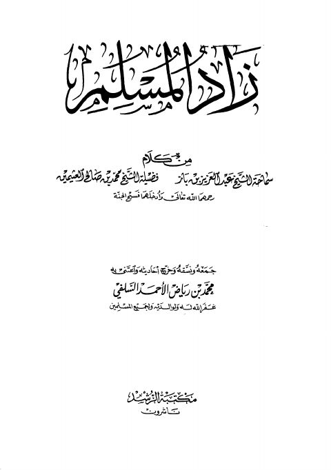

زاد المسلم
Authors: عبد العزيز بن عبد الله بن باز ، محمد بن صالح العثيمين
Editors: محمد بن رياض الأحمد السلفي
Publishers: مكتبة الرشد ناشرون
Download Downloads need an internet connection.
- Published
- 1424-2003
- Country
- الرياض، السعودية
- Edition
- 1
- Volumes
- 1
- Pages
- 535
- Type
- كتاب
- Category
- العقيدة والمذاهب والأديان
- Subcategory
- بحوث ومسائل
Description
**▫️ العنوان: زاد المسلم** ▪️ المؤلف: #عبد_العزيز_بن_باز • #محمد_بن_صالح_العثيمين ▫️ المحقق: #محمد_بن_رياض_الأحمد_السلفي ▪️ الناشر: #مكتبة_الرشد_ناشرون ▫️ تاريخ النشر: 1424-2003 ▪️ بلد النشر: الرياض، #السعودية ▫️ الطبعة: 1 ▪️ عدد الأجزاء: 1 ▫️ الصفحات: 535 ▪️ نوع الوعاء: #كتاب ▫️ التصنيف الرئيسي: #العقيدة_والمذاهب_والأديان ▪️ التصنيف الفرعي: #بحوث_ومسائل ۪